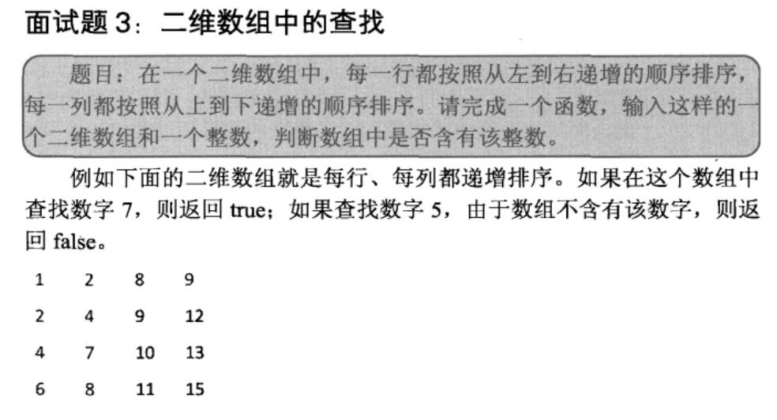

☰ 目录
链接
牛客OJ：二维数组中的查找
九度OJ：http://ac.jobdu.com/problem.php?pid=1384
GitHub代码：gatiemee/CodingInterviews--003二维数组中的查找
CSDN题解：剑指Offer--003--二维数组中的查找
| 牛客OJ | 九度OJ | CSDN题解 |
|---|---|---|
| 二维数组中的查找 | 二维数组中的查找 | gatiemee/CodingInterviews--003二维数组中的查找 |
题意
题目描述
在一个二维数组中，每一行都按照从左到右递增的顺序排序，每一列都按照从上到下递增的顺序排序。请完成一个函数，输入这样的一个二维数组和一个整数，判断数组中是否含有该整数。
输入描述
array： 待查找的二维数组 target：查找的数字
输出描述
查找到返回true，查找不到返回false

暴力解法
暴力的解法，肯定是用两层大循环来查找，不多说直接上代码
#include <iostream>
#include <vector>
using namespace std;
class Solution
{
public:
bool Find(vector<vector<int> > array,int target)
{
int row = 0, col = 0, t = 0;
bool isFound = false;
for(int i = 0; i < array.size( ) ; ++i)
{
for(int j = 0; j < array[i].size( ); ++j)
{
//边输入边验证
if(false == isFound && target == array[i][j])
{
//已经找到后就没必要再找了
isFound = true;
}
}
}
return isFound;
}
};
分治解法
思路
从数组中选取数字，和目标数字的关系有三种情况：=，<或>。
-
如果是等于则查找成功；
-
如果是数组中元素小于要查找的数字，说明要查找的数字应该在当前位置的右边或下边。
-
如果是数组中元素大于要查找的数字，说明要查找的数字应该在当前位置的左边或上边。
即 对于数组中的任何一个元素, 比它小的元素都在它的左方或者上方, 比它大的元素都在它的右边或者下方
但是这两个区域还有可能有重叠，比如右边或下边会在右下角有重叠。
为了不重复的处理重叠的数据, 我们可以找几个特殊的起点, 比如
| 起点 | 性质 | 可否作为起点 |
|---|---|---|
| 左上角 | 没有上方元素(小)和左方元素(小) 只有下方元素(大)和右方元素(大) |
否 |
| 右上角 | 没有上方元素(小), 和右方元素(大) 只有下方元素(大)和左方元素(小) |
是 |
| 左下角 | 没有下方元素(大), 和左方元素(小) 只有上方元素(小)和右方元素(大) |
是 |
| 右下角 | 没有下方元素(大), 和右方元素(大) 只有上方元素(小)和左方元素(小) |
否 |
因此重叠问题的解决方法：
-
如果查找从右上角开始，如果要查找的数字不在右上角，则每次可以剔除一列或一行。
-
也可以从左下角开始
-
但是不能从左上角或者右下角开始。
因为如果选择右上角的元素,
如图，即是我们在二维数组中查找7的轨迹

从右上角的元素出发
比如我们从右上角的数据开始出发
-
比他小的数必定在它的左侧，就往左找
-
比他大的数必定在它的下侧，就往下找
#include <iostream>
#include <vector>
using namespace std;
#define __main main
class Solution
{
public:
bool Find(vector<vector<int> > array,int target)
{
bool res = false;
int row = array.size( );
int col = array[0].size( );
// 我们从右上角的元素找起来
// 如果查找的元素比当前位置元素小, 就向左走
// 如果查找的元素比当前位置元素大, 就向下走
for(int i = 0, j = col -1;
(i >=0 && i < row) && (j >= 0 && j < col);)
{
if(target == array[i][j])
{
res = true;
break;
}
else if(target < array[i][j]) // 小的元素在当前位置左侧
{
#ifdef __tmain
cout <<target <<" < " <<array[i][j] <<" turn left" <<endl;
#endif // __tmain
j--;
}
else
{
#ifdef __tmain
cout <<target <<" > " <<array[i][j] <<" turn down" <<endl;
#endif // __tmain
i++;
}
}
return res;
}
};
int __main()
{
int a1[] = { 1, 2, 8, 9, };
int a2[] = { 2, 4, 9, 12, };
int a3[] = { 4, 7, 10, 13, };
int a4[] = { 6, 8, 11, 15, };
vector<vector<int>> array;
array.push_back(vector<int>(a1, a1 + 4));
array.push_back(vector<int>(a2, a2 + 4));
array.push_back(vector<int>(a3, a3 + 4));
array.push_back(vector<int>(a4, a4 + 4));
Solution solu;
cout <<solu.Find(array, 7) <<endl;
return 0;
}
从左下角的元素出发
比如我们从左下角的数据开始出发
-
比他小的数必定在它的上侧，就往上找
-
比他大的数必定在它的右侧，就往右找
class Solution
{
public:
bool Find(vector<vector<int> > array,int target)
{
bool res = false;
int row = array.size( );
int col = array[0].size( );
// 我们从右上角的元素找起
// 如果查找的元素比当前位置元素小, 就向上走
// 如果查找的元素比当前位置元素大, 就向右走
for(int i = row - 1, j = 0;
(i >=0 && i < row) && (j >= 0 && j < col);)
{
if(target == array[i][j])
{
res = true;
break;
}
else if(target < array[i][j]) // 小的元素在当前位置上侧
{
#ifdef __tmain
cout <<target <<" < " <<array[i][j] <<" turn up" <<endl;
#endif // __tmain
i--;
}
else
{
#ifdef __tmain
cout <<target <<" > " <<array[i][j] <<" turn rigt" <<endl;
#endif // __tmain
j++;
}
}
return res;
}
};